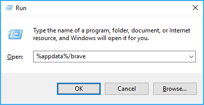
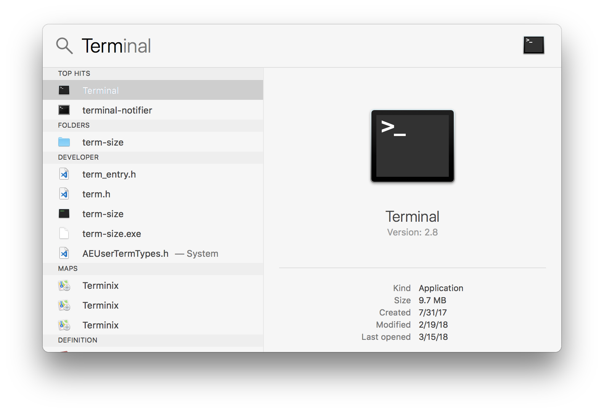
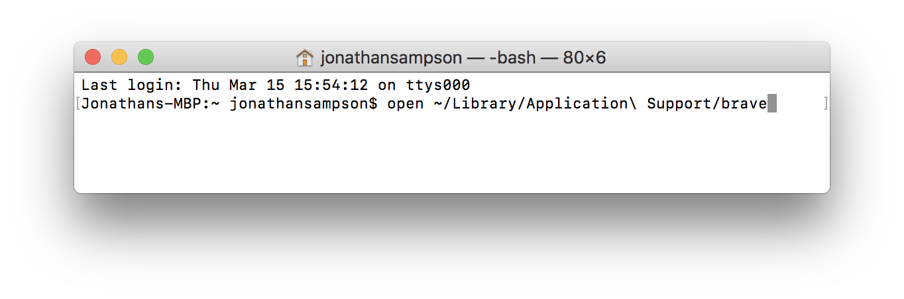

As of version 0.21.24 of Brave, this page is no longer needed.
If your browser has opened in the above state (see this issue), this page may be able to help you.
Before you begin, please ensure that all Brave windows are closed.
First, we'll need to locate the session-store-1 file on your machine. This file helps Brave remember what your workspace looked like before closing. It will create, position, size, and setup your browser windows.
The session-store-1 location depends on your operating system:
%appdata%/brave/session-store-1 [help]~/Library/Application\ Support/brave/session-store-1 [help]Once you've located that file, drag and drop it onto this page. A replacement file will be downloaded automatically.
IMPORTANT: macOS users may see session-store-1.json downloaded. If this is the case, you should rename the file to session-store-1. You can do this via Terminal:
cd ~/Library/Application\ Support/brave
mv session-store-1.json session-store-1
DO NOT REPLACE WITHOUT FIRST CREATING A BACKUP
Once you've secured your backup, you can place this new file in the location of the original. Next, start Brave!
Windows Users
To locate the session-store-1 file on Windows, press WinKey+R and type %appdata%/brave into the window.

macOS Users
To locate the session-store-1 file on macOS, pres CMD+Spacebar and type Terminal into the input.

From within the terminal, run the following command:
open ~/Library/Application\ Support/brave

Once you press enter, and run that command, you should see a Finder window pointing to the Brave directory. Within this directory is the session-store-1 file.